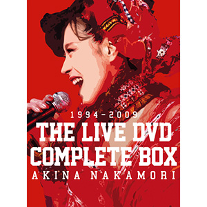

现场视频：第17张
发行年份：2016年
发行日期：5月4日
Disc 1 “UTAHIME” AKINA NAKAMORI PARCO THEATER LIVE 以下收录歌曲视频详情点此跳转
思秋期，愛染橋，ダンスはうまく踊れない，スローモーション，水に挿した花，ミ・アモーレ〔Meu amor é･･･〕，愛撫，月華，黒薔薇，陽炎，私は風，Rose Bud，予感
Disc 2 中森明菜 TRUE LIVE 以下收录歌曲视频详情点此跳转
Tokyo Rose，飾りじゃないのよ涙は，TATTOO，GAIA～地球のささやき～，愛撫，ミ・アモーレ〔Meu amor é･･･〕，原始、女は太陽だった，月華，TSURAI・TSURAI，痛い恋をした，Necessary，LIAR，陽炎，予感，セカンド・ラブ，スローモーション，LA BOHÈME，DESIRE -情熱-
Disc 3 felicidad AKINA NAKAMORI LIVE ‘97 以下收录歌曲视频详情点此跳转
月は青く，水に挿した花，Blue On Pink，約束，OH NO,OH YES!，スローモーション，SOLITUDE，Fin，満月，桜，夜の匂い，おいしい水，赤い薔薇が揺れた，MOONLIGHT SHADOW～月に吠えろ，APPETITE，LA BOHÈME，BLONDE，La Liberté，SO MAD，愛撫，TATTOO，飾りじゃないのよ涙は，DESIRE -情熱-，ミ・アモーレ〔Meu amor é･･･〕，駅，難破船
Disc 4 中森明菜 2000「21世紀への旅立ち」 以下收录歌曲视频详情点此跳转
光のない万華鏡，永遠の扉，予感，Necessary，水に挿した花，ありふれた風景，雨の日は人魚，雨が降ってた…，カタストロフィの雨傘，オフェリア，月華，二人静-「天河伝説殺人事件」より，AL-MAUJ，原始、女は太陽だった，嵐の中で，ミ・アモーレ〔Meu amor é･･･〕，乱火，陽炎
Disc 5 Akina Nakamori Live tour 2003 ～I hope so～ 以下收录歌曲视频详情点此跳转
風の果て，うつつの花，紡ぎ唄，Days，駅，温り，乱火，予感，スローモーション，Blue On Pink，SOLITUDE，LIAR，燠火，マリオネット，月華，薔薇一夜，難破船，LA BOHÈME，I hope so
Disc 6 AKINA NAKAMORI LIVE TOUR 2006 The Last Destination 以下收录歌曲视频详情点此跳转
花よ踊れ，The Heat～musuic fiesta～，月華，落花流水，赤い花，LOVE GATE，紅夜 –beniyo-，嘘つき，眠れる森の蝶，Grace Rain，Heartbreak，MOONLIGHT SHADOW～月に吠えろ，APPETITE，愛撫，原始、女は太陽だった，TATTOO，飾りじゃないのよ涙は，1/2の神話，ミ・アモーレ〔Meu amor é･･･〕，TANGO NOIR，少女A，DESIRE -情熱-，花よ踊れ，MC～スローモーション(清唱)，GAME
Disc 7 Akina Nakamori Special Live 2009 “Empress at Yokohama” 以下收录歌曲视频详情点此跳转
私は泣いています，学生街の喫茶店，旅の宿，心もよう，無縁坂，シクラメンのかほり，ダンスはうまく踊れない，Woman “Wの悲劇より”，ベルベット・イースター，悪女，22才の別れ，雨の物語，I LOVE YOU，恋，I hope so
首发规格：7DVD: UPBH-1404
唱片公司：Universal Music